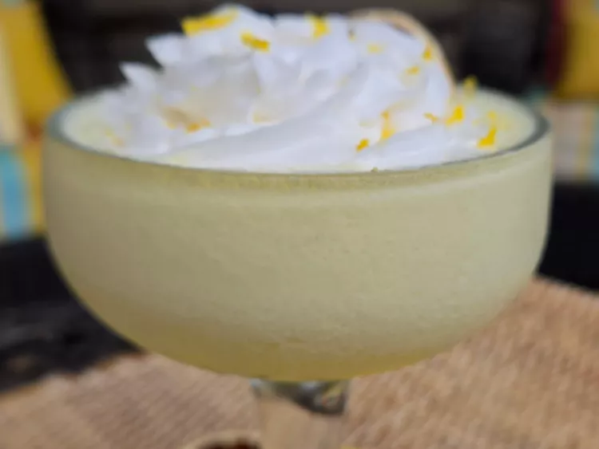

This whipped vodka lemonade, with fresh lemon juice balanced by rich cream and a dollop of vanilla whipped cream is tart, sweet, and almost dessert. Perfect for sunny afternoons or after-dinner delight, this cocktail is sunshine in a glass.
Step 1. Combine limoncello cream, lemon juice, sweetened condensed milk, heavy cream, and lemon & elderflower vodka in a blender. Add ice; blend on Whip or Frozen Cocktail setting until ice is blended.
Step 2. Pour into glasses; garnish with vanilla whipped cream, lemon zest, and dried or fresh lemon wheel.
(per serving)